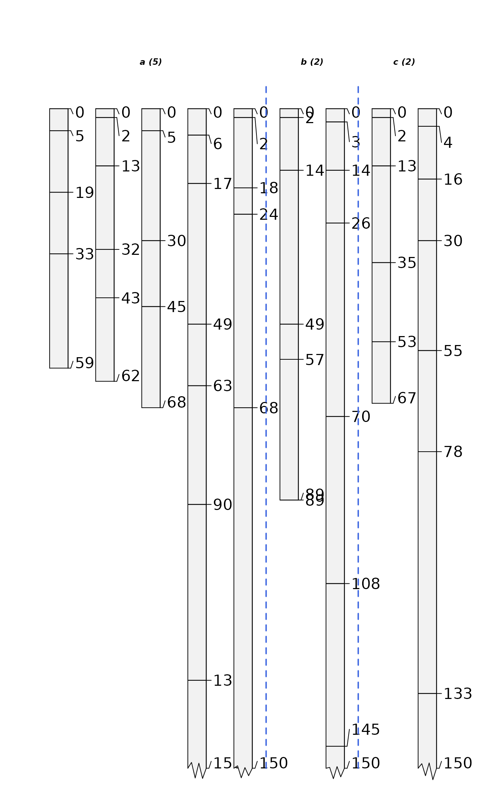
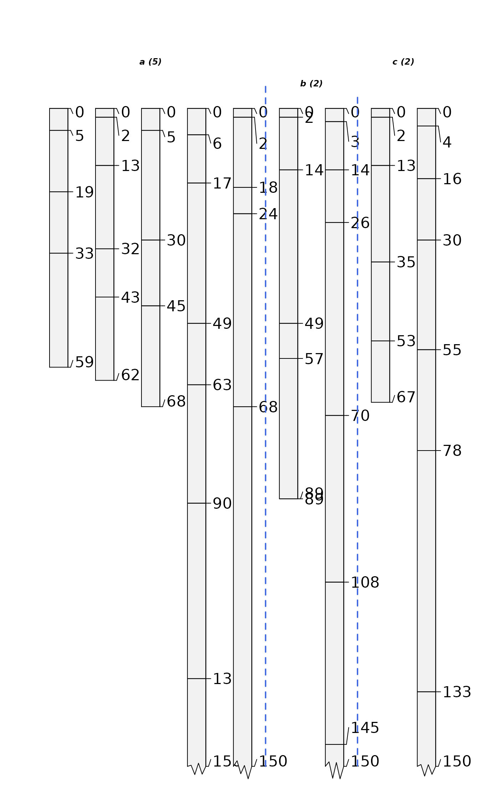
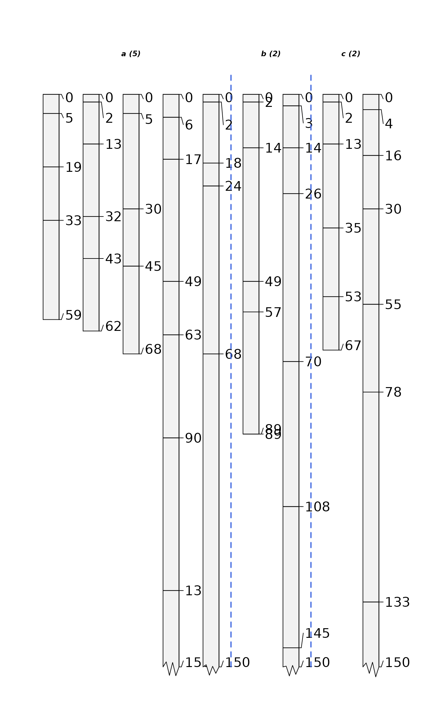
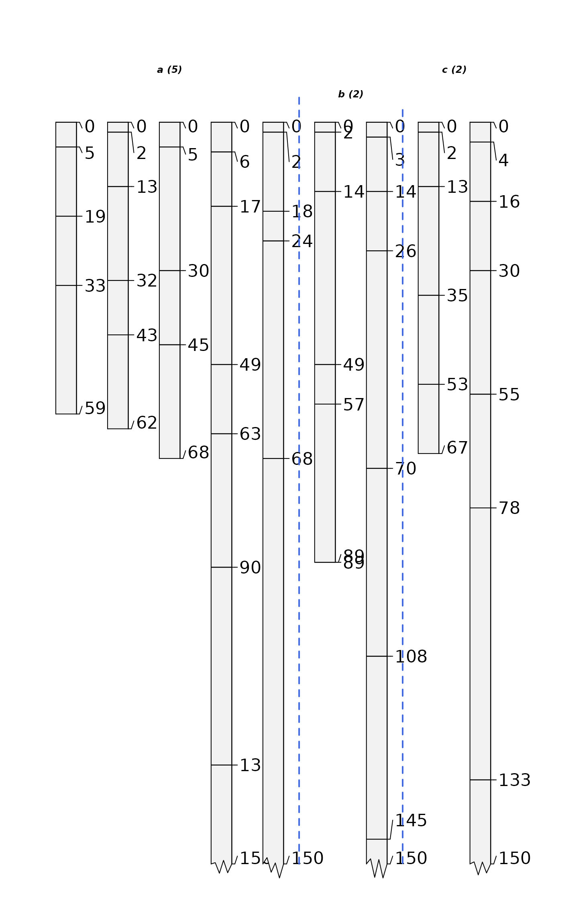

Plot a collection of soil profiles, sorted by group.
The left-right ordering of groups can be adjusted by converting
groups into a factor and explicitly setting factor levels.
Alpha-numeric ordering is used for all other types.
Usage
groupedProfilePlot(
x,
groups,
group.name.offset = -5,
group.name.cex = 0.75,
group.line.col = "RoyalBlue",
group.line.lwd = 2,
group.line.lty = 2,
break.style = c("line", "arrow", "both"),
break.offset = 0.5,
arrow.offset = group.name.offset + 5,
arrow.length = 0.1,
...
)Arguments
- x
a
SoilProfileCollectionobject- groups
the name of a site-level attribute that defines groups, factor levels will influence plotting order
- group.name.offset
vertical offset for group names, single numeric value or vector of offsets
- group.name.cex
font size for group names
- group.line.col
color for line that splits groups
- group.line.lwd
width of line that splits groups
- group.line.lty
style of line that splits groups
- break.style
style of group boundaries: "line", "arrow", "both"
- break.offset
horizontal offset used to place vertical breaks and/or arrows, shifted slightly to the right of default when
hz.depths=TRUEis passed toplotSPC()- arrow.offset
vertical offset for "arrow" style boundaries, single numeric value or vector of offsets
- arrow.length
value passed to
arrowsto define arrow head size- ...
further arguments to
plotSPC
Examples
# sample data
data(sp1)
# convert colors from Munsell to hex-encoded RGB
sp1$soil_color <- with(sp1, munsell2rgb(hue, value, chroma))
# promote to SoilProfileCollection
depths(sp1) <- id ~ top + bottom
site(sp1) <- ~ group
# add a groups
sp1$group.2 <- sprintf("%s-%s", rev(LETTERS[1:3]), sp1$group)
# convert fake groupt to factor with new levels
sp1$group.3 <- factor(sp1$group.2, levels=c('C-2', 'B-2', 'A-2', 'C-1', 'B-1', 'A-1'))
# plot profiles, sorted and annotated by 'group' (integers)
par(mar=c(1,1,1,1))
groupedProfilePlot(sp1, groups='group', max.depth=150, group.name.offset = -5, id.style='side')
#> [P001:6] horizon with top == bottom, cannot fix horizon depth overlap
#> consider using repairMissingHzDepths()
 # plot profiles, sorted and annotated by 'group.2' (characters)
par(mar=c(1,1,1,1))
groupedProfilePlot(sp1, groups='group.2', max.depth=150, group.name.offset = -5, id.style='side')
#> [P001:6] horizon with top == bottom, cannot fix horizon depth overlap
#> consider using repairMissingHzDepths()
# plot profiles, sorted and annotated by 'group.3' (characters)
par(mar=c(1,1,1,1))
groupedProfilePlot(sp1, groups='group.3', max.depth=150, group.name.offset = -5, id.style='side')
#> [P001:6] horizon with top == bottom, cannot fix horizon depth overlap
#> consider using repairMissingHzDepths()
# plot profiles, sorted and annotated by 'group.2' (characters)
par(mar=c(1,1,1,1))
groupedProfilePlot(sp1, groups='group.2', max.depth=150, group.name.offset = -5, id.style='side')
#> [P001:6] horizon with top == bottom, cannot fix horizon depth overlap
#> consider using repairMissingHzDepths()
# plot profiles, sorted and annotated by 'group.3' (characters)
par(mar=c(1,1,1,1))
groupedProfilePlot(sp1, groups='group.3', max.depth=150, group.name.offset = -5, id.style='side')
#> [P001:6] horizon with top == bottom, cannot fix horizon depth overlap
#> consider using repairMissingHzDepths()
 # make fake site-level attribute and adjust levels
sp1$new.group <- sample(letters[1:3], size=length(sp1), replace=TRUE)
# tabulate pedons / group
tab <- table(sp1$new.group)
# sort large -> small
tab <- sort(tab, decreasing = TRUE)
# set levels based on sorted tabulation
# assign custom labels
sp1$new.group <- factor(sp1$new.group, levels=names(tab),
labels=paste0(names(tab), ' (', tab, ')'))
groupedProfilePlot(sp1, groups='new.group', max.depth=150,
group.name.offset = -10, id.style='side')
#> [P001:6] horizon with top == bottom, cannot fix horizon depth overlap
#> consider using repairMissingHzDepths()

# offsets can be set using a vector of values, recycled as needed
groupedProfilePlot(sp1, groups='new.group', max.depth=150,
group.name.offset=c(-10, -5), id.style='side')
#> [P001:6] horizon with top == bottom, cannot fix horizon depth overlap
#> consider using repairMissingHzDepths()

# annotate with arrows instead of vertical lines
groupedProfilePlot(sp1, groups='new.group', max.depth=150,
group.name.offset=c(-10, -12), break.style='arrow', arrow.offset=-3,
group.line.lty = 1, group.line.lwd = 1, id.style='side')
#> [P001:6] horizon with top == bottom, cannot fix horizon depth overlap
#> consider using repairMissingHzDepths()
# make fake site-level attribute and adjust levels
sp1$new.group <- sample(letters[1:3], size=length(sp1), replace=TRUE)
# tabulate pedons / group
tab <- table(sp1$new.group)
# sort large -> small
tab <- sort(tab, decreasing = TRUE)
# set levels based on sorted tabulation
# assign custom labels
sp1$new.group <- factor(sp1$new.group, levels=names(tab),
labels=paste0(names(tab), ' (', tab, ')'))
groupedProfilePlot(sp1, groups='new.group', max.depth=150,
group.name.offset = -10, id.style='side')
#> [P001:6] horizon with top == bottom, cannot fix horizon depth overlap
#> consider using repairMissingHzDepths()

# offsets can be set using a vector of values, recycled as needed
groupedProfilePlot(sp1, groups='new.group', max.depth=150,
group.name.offset=c(-10, -5), id.style='side')
#> [P001:6] horizon with top == bottom, cannot fix horizon depth overlap
#> consider using repairMissingHzDepths()

# annotate with arrows instead of vertical lines
groupedProfilePlot(sp1, groups='new.group', max.depth=150,
group.name.offset=c(-10, -12), break.style='arrow', arrow.offset=-3,
group.line.lty = 1, group.line.lwd = 1, id.style='side')
#> [P001:6] horizon with top == bottom, cannot fix horizon depth overlap
#> consider using repairMissingHzDepths()
 if (FALSE) { # \dontrun{
# more complete example using data from soilDB package
data(loafercreek, package='soilDB')
par(mar=c(1,1,1,1))
# lines
groupedProfilePlot(loafercreek, groups='hillslopeprof', group.name.cex = 0.5,
group.name.offset = -10)
# arrows
groupedProfilePlot(loafercreek, groups='hillslopeprof', group.name.cex = 0.5,
group.name.offset = -10, break.style ='arrow', group.line.lty = 1,
group.line.lwd = 1)
# both
groupedProfilePlot(loafercreek, groups='hillslopeprof', group.name.cex = 0.5,
group.name.offset = -10, break.style ='both', group.line.lty = 1,
group.line.lwd = 1)
} # }
if (FALSE) { # \dontrun{
# more complete example using data from soilDB package
data(loafercreek, package='soilDB')
par(mar=c(1,1,1,1))
# lines
groupedProfilePlot(loafercreek, groups='hillslopeprof', group.name.cex = 0.5,
group.name.offset = -10)
# arrows
groupedProfilePlot(loafercreek, groups='hillslopeprof', group.name.cex = 0.5,
group.name.offset = -10, break.style ='arrow', group.line.lty = 1,
group.line.lwd = 1)
# both
groupedProfilePlot(loafercreek, groups='hillslopeprof', group.name.cex = 0.5,
group.name.offset = -10, break.style ='both', group.line.lty = 1,
group.line.lwd = 1)
} # }